Planning Context
어떤 기획이었나
- 신규 게임 제안은 실제 프로젝트 기획과 달리, 장르의 시장성·플랫폼 적합성·UX 복잡도를 설득력 있게 정리해야 합니다.
- 내부 어필 목적의 문서는 완성된 개발 산출물보다 관점과 논리의 선명함이 중요합니다.
Internal Proposal · Strategic POV
정식 프로젝트 산출물이라기보다, 회사 안에서 꾸준히 신규 게임 방향과 장르 관점을 제안하고 어필해온 활동입니다.

Planning Context
Process
Deliverables
Result
정식 제작물로 과장하지 않고, 게임 UX 기획자로서 장르와 플랫폼을 바라보는 관점을 보여주는 보조 포트폴리오로 정리했습니다.
Deliverable Captures
원본 문서는 포함하지 않고, 포트폴리오 확인용으로 일부 페이지만 이미지화했습니다. 슬라이드 마스터/상하단 영역은 흐림 처리했습니다.
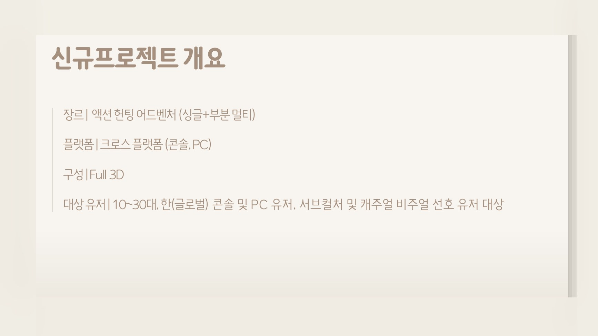
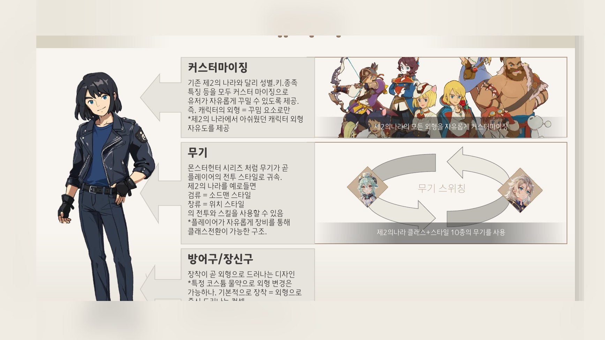
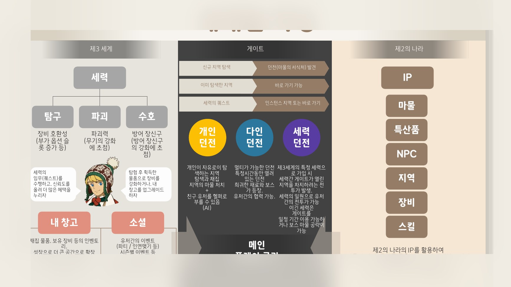
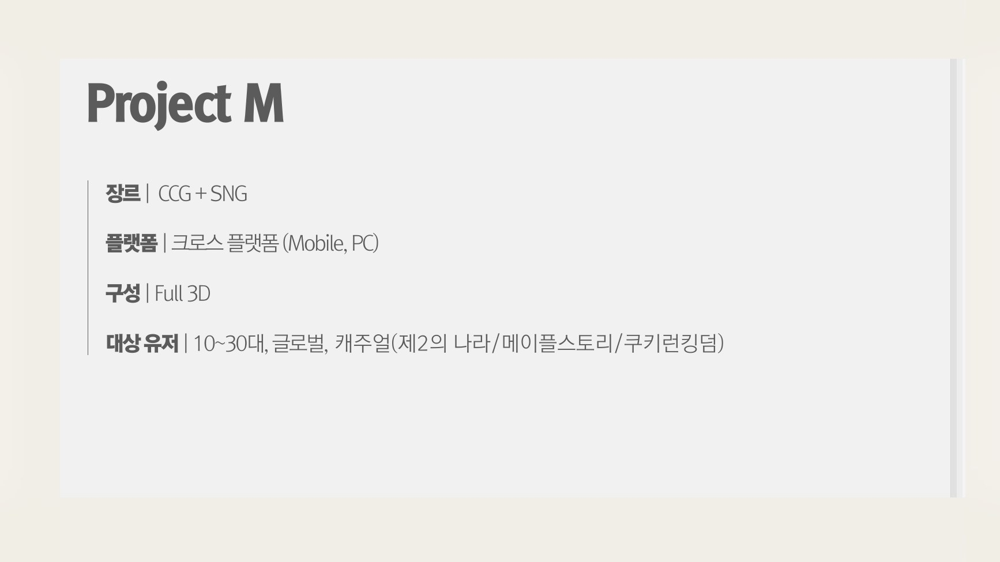
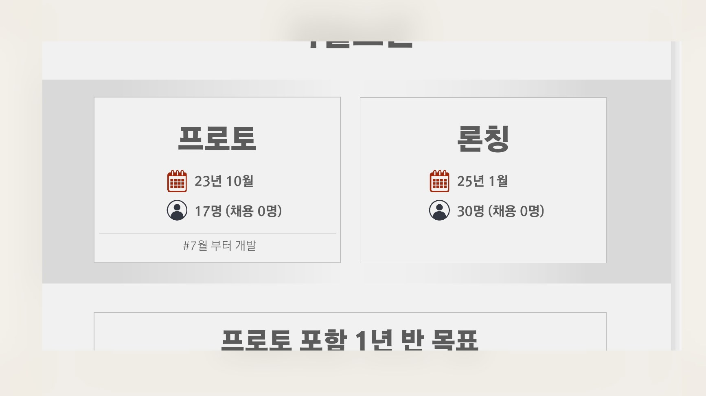
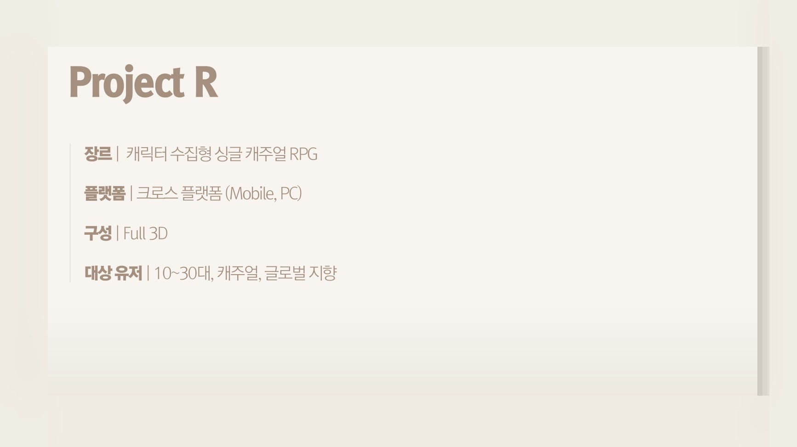
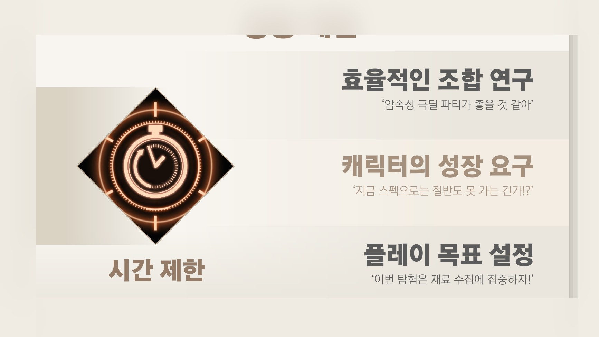
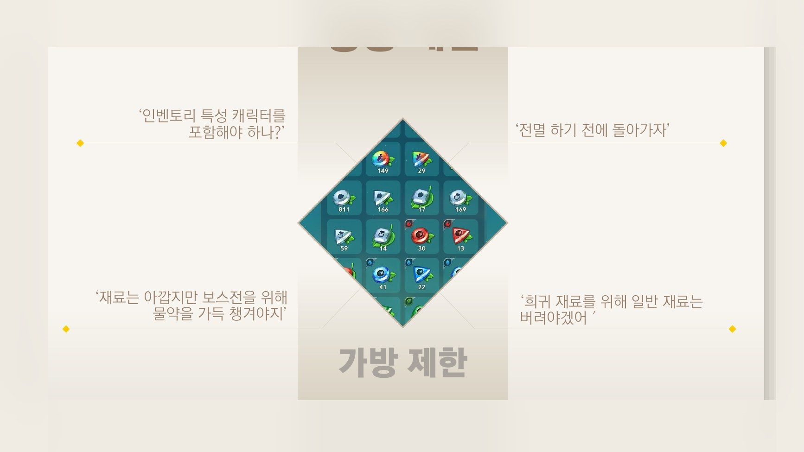
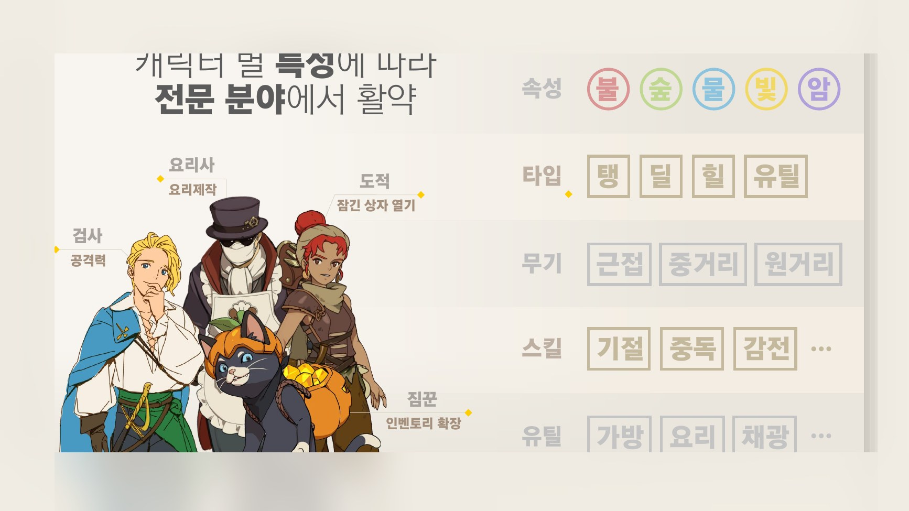
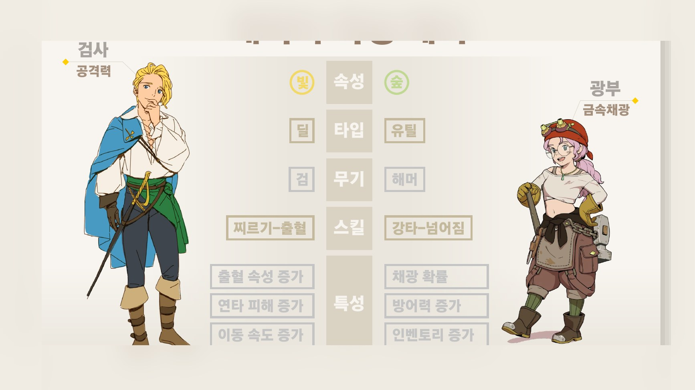
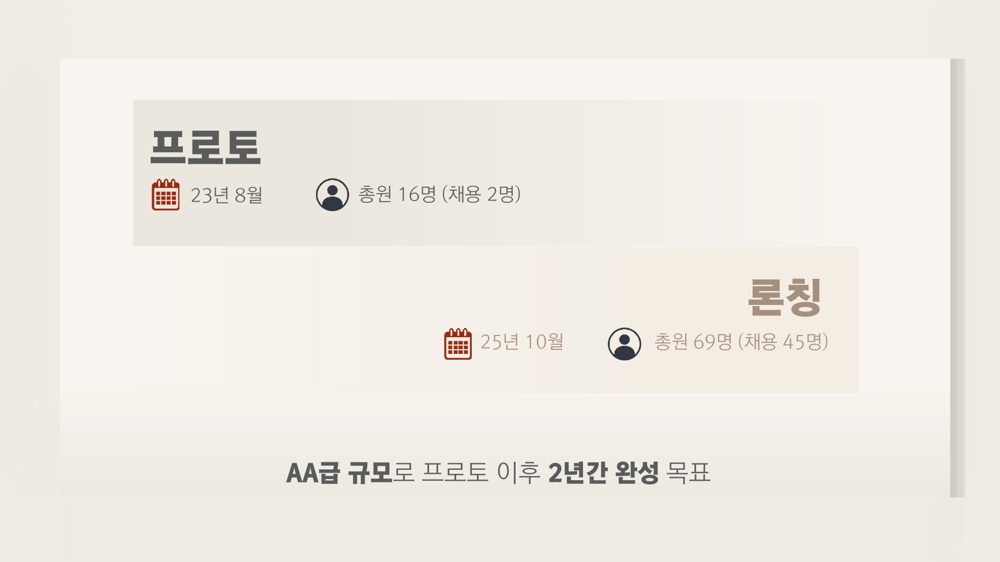
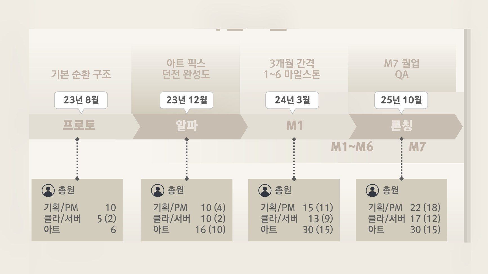
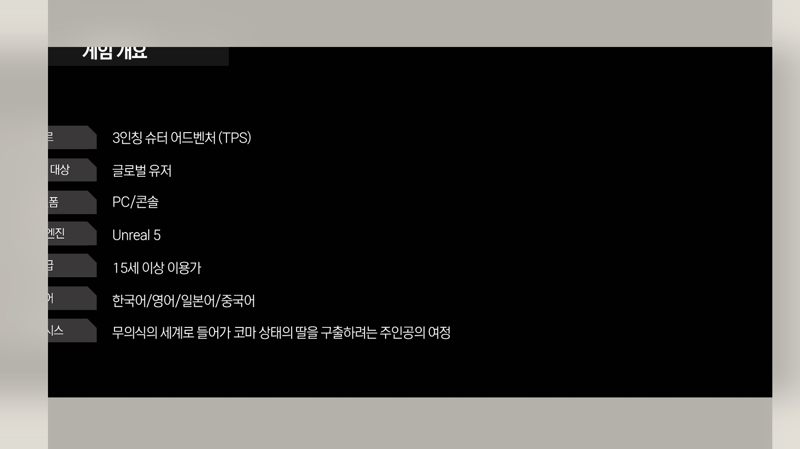
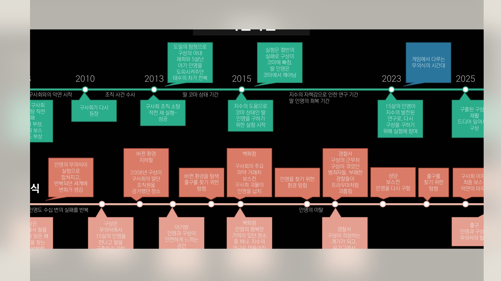
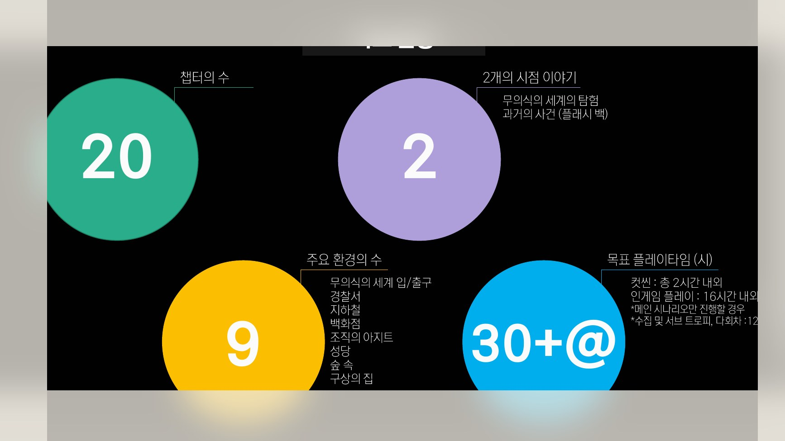
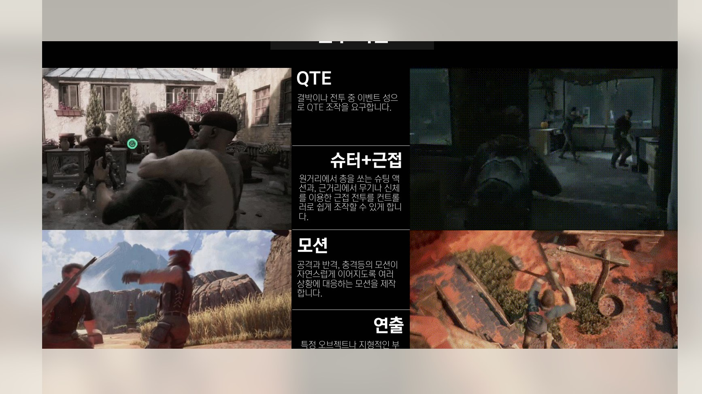
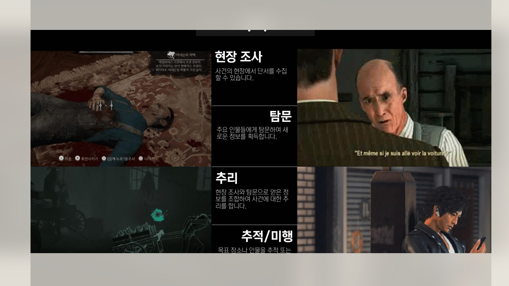